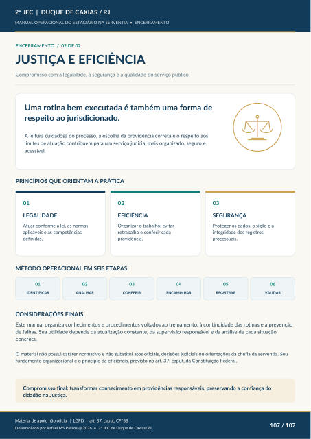

ENCERRAMENTO / 02 DE 02
JUSTIÇA E EFICIÊNCIA
Compromisso com a legalidade, a segurança e a qualidade do serviço público Uma rotina bem executada é também uma forma de respeito ao jurisdicionado. A leitura cuidadosa do processo, a escolha da providência correta e o respeito aos
limites de atuação contribuem para um serviço judicial mais organizado, seguro e acessível.
PRINCÍPIOS QUE ORIENTAM A PRÁTICA
LEGALIDADE
Atuar conforme a lei, as normas aplicáveis e as competências definidas.
EFICIÊNCIA
Organizar o trabalho, evitar retrabalho e conferir cada providência.
SEGURANÇA
Proteger os dados, o sigilo e a integridade dos registros processuais.
MÉTODO OPERACIONAL EM SEIS ETAPAS
IDENTIFICAR
ANALISAR
CONFERIR
ENCAMINHAR
REGISTRAR
VALIDAR
CONSIDERAÇÕES FINAIS Este manual organiza conhecimentos e procedimentos voltados ao treinamento, à continuidade das rotinas e à prevenção de falhas. Sua utilidade depende da atualização constante, da supervisão responsável e da análise de cada situação concreta. O material não possui caráter normativo e não substitui atos oficiais, decisões judiciais ou orientações da chefia da serventia. Seu fundamento organizacional é o princípio da eficiência, previsto no art. 37, caput, da Constituição Federal. Compromisso final: transformar conhecimento em providências responsáveis, preservando a confiança do
cidadão na Justiça.
Ver também o infográfico original (página 107)
